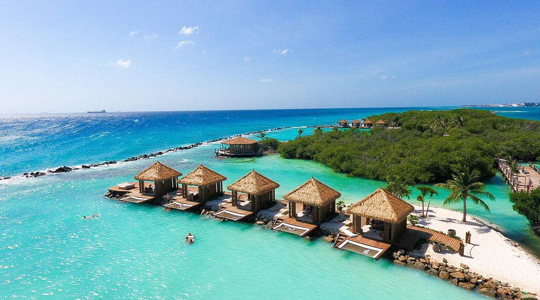

Corea del Sur
Lo que vas a conocer:
- Cultura y tradición: Templos, casas hanok, ceremonias del té, vida rural coreana.
- Vida urbana: Barrios modernos, cafés temáticos, diseño y tecnología en Seúl.
- Naturaleza: Caminatas en montañas, parques nacionales, costas y templos en el bosque.
- Gastronomía: Comida callejera, clases de cocina tradicional, mercados locales.
- Historia viva: Desde la ocupación japonesa hasta la división con Corea del Norte.
¿Cómo es el viaje con Viajes Parman?
- Grupos pequeños o viajes privados
- Guías locales y bilingües con experiencia en cultura coreana.
- Rutas con sentido: Integrando lo turístico con lo auténtico.
- Alojamiento con encanto: Hanoks tradicionales, guesthouses y hoteles bien ubicados.
- Actividades con impacto local positivo: Talleres, visitas responsables, gastronomía con productores reales.
Dubái

Lo que vas a conocer:
- Arquitectura futurista: El Burj Khalifa, el edificio más alto del mundo, islas artificiales como el Palm Jumeirah y el Burj Al Arab, uno de los hoteles más lujosos del planeta.
- Mercados tradicionales: El zoco dorado, el zoco de especias, y el zoco de textiles, para un recorrido por la cultura y los oficios tradicionales.
- Desierto: Safaris en el desierto, paseos en camello, cenas bajo las estrellas.
- Cultura local: Museos, mezquitas, y la historia de Dubái como puerto de comercio entre el este y el oeste.
- Gastronomía: Desde los lujosos restaurantes internacionales hasta los mercados de comida local, la experiencia culinaria en Dubái es un verdadero viaje de sabores.
¿Cómo es el viaje con Viajes Parman?
- Guías locales: Nuestros guías son locales, apasionados por su cultura y conocedores del destino.
- Experiencias únicas: Conocerás el Dubái moderno, pero también nos adentramos en sus tradiciones y en su historia.
- Grupos pequeños o privados
- Alojamiento y transporte: Seleccionamos alojamientos bien ubicados y cómodos, con opciones desde lujosos resorts hasta hospedajes más tranquilos y auténticos.
- Actividades: Safaris en el desierto, visitas a monumentos, tours por las zonas históricas y mucho más.
Aruba

Lo que vas a conocer:
- Playas paradisíacas: Eagle Beach, Palm Beach y Baby Beach, ideales para descansar y nadar en aguas turquesas.
- Naturaleza: El Parque Nacional Arikok, rutas de senderismo, y formaciones rocosas únicas.
- Cultura local: Disfruta de las festividades caribeñas, mercados locales y la cocina de la isla.
- Aventura: Buceo, snorkel, kite surf y paseos en barco.
- Historia y tradiciones: Conoce la historia de Aruba, desde su legado indígena hasta su cultura mestiza actual.
¿Cómo es el viaje con Viajes Parman?
- Grupos pequeños o viajes privados
- Guías locales apasionados por su isla y su cultura.
- Actividades para todos los gustos: Desde relajación en la playa hasta deportes acuáticos y excursiones.
- Alojamiento de calidad: Desde resorts frente al mar hasta acogedoras guesthouses en el corazón de la isla.